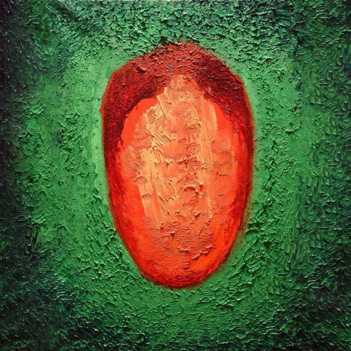
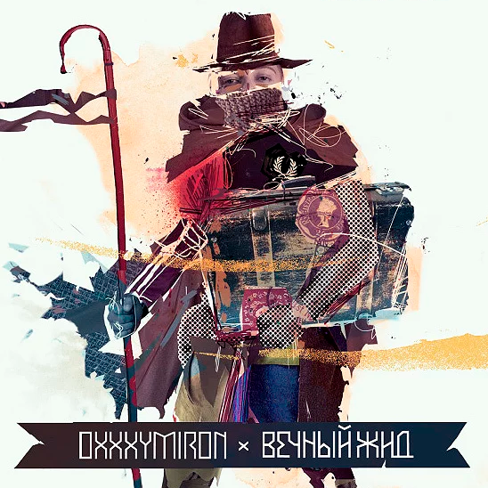

OXXXYMIRON
Мирон Янович Фёдоров

БИОГРАФИЯ

Детство
Мирон родился 31 января 1985 года в Ленинграде. Отец был профессором физики, а мать – библиотекарем. После 4 лет обучения в ленинградской школе их семья перебирается в немецкий городок Руттеншайд.
Оказавшемуся в чужой среде без знания немецкого языка Мирону было сложно. Именно рэп стал тем якорем спасения, который помог 13-летнему подростку преодолеть насмешки и издевательства. Первые работы он сочинял под псевдонимом MC Миф.
В 15 лет парень вновь поменял место жительства – переехал в английский город Слау. По воспоминаниям Мирона, среди местных ребят было много наркоманов и маргиналов.
Именно учительница, преподававшая там историю, заметила потенциал парня и настояла, чтобы он подал заявку в Оксфорд. Мирон выбрал факультет английской литературы и сумел поступить. На курсе его окружали коренные англичане из «верхушки общества».
В 2006 году ему диагностировали «биполярное расстройство», в результате чего Мирон был исключен из университета. Он смог восстановиться и в итоге окончил Оксфорд, однако оценки в дипломе были самыми низкими из возможных.
После выпуска Мирон снял квартиру на окраине Лондона и попытался устроиться на работу, однако это было сложно даже для выпускника Оксфорда. В результате он устроился на стройку – это решение далось нелегко. Впоследствии он сменил немало профессий – подрабатывал репетитором, гидом, конферансье, трудился в офисе, разгружал фуры.
Оказавшемуся в чужой среде без знания немецкого языка Мирону было сложно. Именно рэп стал тем якорем спасения, который помог 13-летнему подростку преодолеть насмешки и издевательства. Первые работы он сочинял под псевдонимом MC Миф.
В 15 лет парень вновь поменял место жительства – переехал в английский город Слау. По воспоминаниям Мирона, среди местных ребят было много наркоманов и маргиналов.
Именно учительница, преподававшая там историю, заметила потенциал парня и настояла, чтобы он подал заявку в Оксфорд. Мирон выбрал факультет английской литературы и сумел поступить. На курсе его окружали коренные англичане из «верхушки общества».
В 2006 году ему диагностировали «биполярное расстройство», в результате чего Мирон был исключен из университета. Он смог восстановиться и в итоге окончил Оксфорд, однако оценки в дипломе были самыми низкими из возможных.
После выпуска Мирон снял квартиру на окраине Лондона и попытался устроиться на работу, однако это было сложно даже для выпускника Оксфорда. В результате он устроился на стройку – это решение далось нелегко. Впоследствии он сменил немало профессий – подрабатывал репетитором, гидом, конферансье, трудился в офисе, разгружал фуры.

Творчество
В 2008 году Мирон начал выкладывать в интернет свои демо-записи. К этому времени он взял псевдоним Oxxxymiron, что являлось отсылкой, во-первых, к его настоящему имени, во-вторых, к литературному термину «оксюморон», а утроенное «x» отсылало к щедрому использованию нецензурной лексики в его треках.
Вместе с Schokk Мирон создал собственный лейбл «Vagabund» и выпустил свой первый альбом – «Вечный жид». После стычки с рэпером Ромой Жиганом Шок уехал в Германию, а Оксимирон дал бесплатный сольный концерт в Москве и отправился в Лондон.
В 2012 году Мирон представил поклонникам первый микстейп «miXXXtape I», а год спустя свет увидел следующий – «miXXXtape II: Долгий путь домой».
В 2015 году выпускает альбом «Горгород». Это было законченное концептуальное произведение, рассказывающее историю писателя по имени Марк.
В сентябре 2017 года рэпер прервал полуторагодовое молчание и представил новый трек «Биполярочка», который написал и записал за одну ночь. В течение двух лет Оксимирон был исполнительным директором лейбла Booking Machine.
Его история об эмиграции вдохновила Михаила Идова на создание сериала "Лондонград". Рэпер же написал заглавную композицию "Лондонград", которая звучала в сериале. В 2019 году Оксимирон принял участие в съемках документального фильма "BEEF: Русский хип-хоп".
В ноябре 2021 года он выпустил первый после долгого молчания трек – десятиминутную исповедь «Кто убил Марка?», в которой вновь вспомнил историю с избиением Жиганом. 1 декабря Оксимирон представил новый альбом «Красота и уродство», куда вошли 22 новых песни.
Вместе с Schokk Мирон создал собственный лейбл «Vagabund» и выпустил свой первый альбом – «Вечный жид». После стычки с рэпером Ромой Жиганом Шок уехал в Германию, а Оксимирон дал бесплатный сольный концерт в Москве и отправился в Лондон.
В 2012 году Мирон представил поклонникам первый микстейп «miXXXtape I», а год спустя свет увидел следующий – «miXXXtape II: Долгий путь домой».
В 2015 году выпускает альбом «Горгород». Это было законченное концептуальное произведение, рассказывающее историю писателя по имени Марк.
В сентябре 2017 года рэпер прервал полуторагодовое молчание и представил новый трек «Биполярочка», который написал и записал за одну ночь. В течение двух лет Оксимирон был исполнительным директором лейбла Booking Machine.
Его история об эмиграции вдохновила Михаила Идова на создание сериала "Лондонград". Рэпер же написал заглавную композицию "Лондонград", которая звучала в сериале. В 2019 году Оксимирон принял участие в съемках документального фильма "BEEF: Русский хип-хоп".
В ноябре 2021 года он выпустил первый после долгого молчания трек – десятиминутную исповедь «Кто убил Марка?», в которой вновь вспомнил историю с избиением Жиганом. 1 декабря Оксимирон представил новый альбом «Красота и уродство», куда вошли 22 новых песни.
Батлы
На Versus-батлах его противниками становились рэперы Дуня, Крип-а-Крип, Johnnyboy – и каждый раз он одерживал безоговорочную победу, как отзывались зрители, «flawless victory».
В июне 2016 года состоялся Versus Oxxxymiron vs ST, где Мирон в очередной раз одержал победу. Видео их баттла было выложено на Youtube, и всего за три дня количество просмотров превысило 5 миллионов.
В августе 2017 года состоялся долгожданный рэп-баттл Оксимирона vs MC Гнойный (Слава КПСС). По итогам трех раундов все пятеро судей отдали голос за Гнойного.
В октябре 2019 года Oxxxymiron схлеснулся с Dizaster. Соперники читали на английском языке.
В июне 2016 года состоялся Versus Oxxxymiron vs ST, где Мирон в очередной раз одержал победу. Видео их баттла было выложено на Youtube, и всего за три дня количество просмотров превысило 5 миллионов.
В августе 2017 года состоялся долгожданный рэп-баттл Оксимирона vs MC Гнойный (Слава КПСС). По итогам трех раундов все пятеро судей отдали голос за Гнойного.
В октябре 2019 года Oxxxymiron схлеснулся с Dizaster. Соперники читали на английском языке.

Концерты
В 2016 году Oxxxymiron провел два больших тура: «Takeover tour» и «Back to Europe Tour».
В октябре-декабре 2017 года провёл тур по городам России.
В августе 2018 и 2019 года вместе с лейблом Booking Machine поучаствовали в концерте «Booking Machine Festival».
В начале 2022 года должны были пройти выступления Оксимирона в Москве и Петербурге. Но из-за вооруженного конфликта на Украине он отменил все концерты. Весной провёл 3 концерта «RUSSIANS AGAINT WAR» в Стамбуле, Лондоне и Берлине.
В октябре-декабре 2017 года провёл тур по городам России.
В августе 2018 и 2019 года вместе с лейблом Booking Machine поучаствовали в концерте «Booking Machine Festival».
В начале 2022 года должны были пройти выступления Оксимирона в Москве и Петербурге. Но из-за вооруженного конфликта на Украине он отменил все концерты. Весной провёл 3 концерта «RUSSIANS AGAINT WAR» в Стамбуле, Лондоне и Берлине.
Политика
Оксимирон ведет активную оппозиционную деятельность. В июле-августе 2019 года рэпер публично поддержал серию протестов на волне недопущения независимых кандидатов на выборы в Мосгордуму.
В 2022 году высказывал своё несогласие с властью в России и выходил на митинги против войны в Украине.
За 3 концерта «RAW» собрали билетами и донатами 195.000$ на помощь украинцам.
В 2022 году высказывал своё несогласие с властью в России и выходил на митинги против войны в Украине.
За 3 концерта «RAW» собрали билетами и донатами 195.000$ на помощь украинцам.
Награды
Обладатель премии «Человек года GQ 2012» в номинации «Открытие года».
Победитель в общественных голосованиях Hip-hop.ru Award:
2009 год - «Открытие года», «Лучший трек демо-музыки», «Лучший МС 14-го независимого баттла», «Прорыв баттла», «Лучший трек баттла», «Лучший спарринг баттла»
2011 год - «Лучший альбом», «Лучший трек демо-музыки»
2012 год - «Лучшее видео», «Исполнитель года», «Событие года», «Лучший mixtape»
2013 год - «Лучшее видео», «Исполнитель года», «Лучший mixtape»
Победитель в общественных голосованиях портала The Flow:
2015 год - «Лучший отечественный альбом», «лучший русскоязычный трек», «лучший русскоязычный артист»
2021 год - «Альбом года», «трек года», «артист года»
Премия «Чартова Дюжина» (2018) в номинации «Лучший дуэт» (вместе с группой Би-2) и др.
Победитель в общественных голосованиях Hip-hop.ru Award:
2009 год - «Открытие года», «Лучший трек демо-музыки», «Лучший МС 14-го независимого баттла», «Прорыв баттла», «Лучший трек баттла», «Лучший спарринг баттла»
2011 год - «Лучший альбом», «Лучший трек демо-музыки»
2012 год - «Лучшее видео», «Исполнитель года», «Событие года», «Лучший mixtape»
2013 год - «Лучшее видео», «Исполнитель года», «Лучший mixtape»
Победитель в общественных голосованиях портала The Flow:
2015 год - «Лучший отечественный альбом», «лучший русскоязычный трек», «лучший русскоязычный артист»
2021 год - «Альбом года», «трек года», «артист года»
Премия «Чартова Дюжина» (2018) в номинации «Лучший дуэт» (вместе с группой Би-2) и др.
АЛЬБОМЫ

Красота и Уродство
miXXXtape III:
Смутное время
Смутное время

ГОРГОРОД
miXXXtape II:
Долгий путь домой
Долгий путь домой

Вечный жид

miXXXtape I